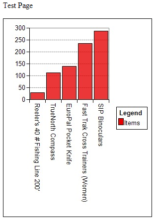
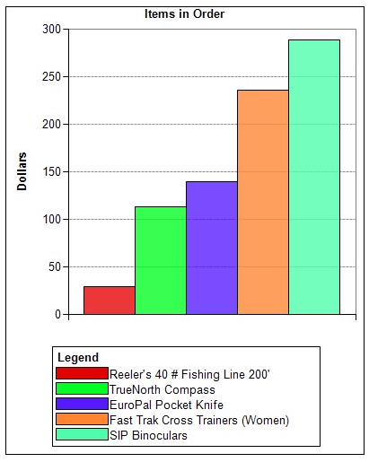
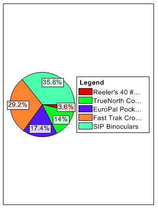
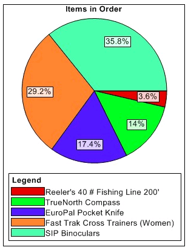

Placing SimpleCharts on a Web Page
 Note : The Placing SimpleCharts on a Web Page topic describes techniques appropriate for Alpha Five database users.
Note : The Placing SimpleCharts on a Web Page topic describes techniques appropriate for Alpha Five database users.
Bar Chart Example
The following example is based on the invoice_items table of the AlphaSports database. To create a bar chart:
Create a new A5W page in the HTML Editor.
Switch to the Source tab.
Enter the following code and save the page as "invoice_items.a5w".
<html> <head> <meta name="generator" content="Alpha Five HTML Editor"> <title></title> </head> <body> <p>Test Page</p> <p><img src="chartgen.a5w"> </p> </body> </html> |
The invoice_items.a5w page displays the text "Test Page" and the chart image created by the chartgen.a5w page.
Use Notepad, Textpad, or another text editor to create a new page named "chartgen.a5w". You must not use the HTML Editor.
Enter the following script into the page save it.
<%a5 Dim chartX as P chartX = ole.Create("SimpleChartLite.AxisChartGenerator") dim list as C dim inv as C inv = "000001" list = set.external_record_content_get("items-product", "product->description + '|' + invoice_items->extension", "invoice_items->extension", "invoice_items->invoice_number = " + quote(inv) ) chartX.DataSeries.AddBarSeries("Items", scFillModeAutoSolid) dim desc as C dim num as N for each x in list desc = alltrim( word(x, 1, "|") ) num = val( word(x, 2, "|") ) chartX.DataSeries(1).SeriesData.Add(desc, num) next chartX.height = 400 chartX.width = 300 Response.mime_type = "image/jpeg" ? chartX.SaveToStream(2) delete chartX %> |
Understanding the Script
First, the script creates the chartX object that will refer to the chart.
<%a5 Dim chartX as P chartX = ole.Create("SimpleChartLite.AxisChartGenerator") |
Next, the script retrieves the data that the chart will display from the items-product set using the SET.EXTERNAL_RECORD_CONTENT_GET() method. The filter is fixed to retrieve records where invoice_number is equal to "000001".
dim list as C dim inv as C inv = "000001" list = set.external_record_content_get("items-product", "product->description + '|' + invoice_items->extension", "invoice_items->extension", "invoice_items->invoice_number = " + quote(inv) ) |
The following command adds a data series to the chart. The legend for the data series is "Items".
chartX.DataSeries.AddBarSeries("Items", scFillModeAutoSolid) |
 Note : The first argument of the .DataSeries.AddBarSeries() method cannot be NULL.
Note : The first argument of the .DataSeries.AddBarSeries() method cannot be NULL.
Each data point in a chart is a pair of values: a character description and a numeric value. The FOR EACH ... NEXT loop retrieves and parses each line in the list and adds data points to the data series.
dim desc as C dim num as N for each x in list desc = alltrim( word(x, 1, "|") ) num = val( word(x, 2, "|") ) chartX.DataSeries(1).SeriesData.Add(desc, num) next |
 Note : The subscript ("N") of the . DataSeries(N).SeriesData.Add() method must be greater than zero.
Note : The subscript ("N") of the . DataSeries(N).SeriesData.Add() method must be greater than zero.
Finally, the script sets the size of the chart, publishes it as an image, and deletes the chart object.
chartX.height = 400 chartX.width = 300 Response.mime_type = "image/jpeg" ? chartX.SaveToStream(2) delete chartX %> |
The result should look something like this.

The following script enhances the chart by:
Placing the data points into different data series.
Setting the caption to "Items in Order".
Setting the unit axis label to "Dollars".
Placing the legend at the bottom of the chart.
Hiding the data labels.
The next step is to change the way the data is added to the chart a new data series (or "row") for each product. The script does this by modifying and moving the chart.DataSeries.AddBarSeries("Items", 0) statement inside the loop. It changes the desc argument in the chart.DataSeries(k).SeriesData.Add(" ", num) statement to " " and the 1 to the counter k.
Finally, a series of statements set the caption, the legend position, the unit label, and change the size of the chart.
 Note : If the chart dimensions are too small, you will get distorted or partial data.
Note : If the chart dimensions are too small, you will get distorted or partial data.
<%a5 Dim chartX as P dim list as C dim inv as C dim desc as C dim num as N dim k as N = 1 chartX = ole.Create("SimpleChartLite.AxisChartGenerator") inv = "000001" list = set.external_record_content_get("items-product", "product->description + '|' + invoice_items->extension", "invoice_items->extension", "invoice_items->invoice_number = " + quote(inv) ) for each x in list desc = alltrim( word(x, 1, "|") ) num = val( word(x, 2, "|") ) chartX.DataSeries.AddBarSeries(desc, scFillModeAutoSolid) chartX.DataSeries(k).SeriesData.Add(" ", num) k = k + 1 next chartX.caption = "Items in Order" chartX.LegendPos = 3 ' bottom chartX.UnitAxisLabel = "Dollars" chartX.width=400 chartX.height=500 Response.mime_type = "image/jpeg" ? chartX.SaveToStream(scImageFormatJpeg) delete chartX %> |
The result should look something like this.

Pie Chart Example
The following example is based on the invoice_items table of the AlphaSports database. To create a bar chart:
Create a new A5W page in the HTML Editor.
Switch to the Source tab.
Enter the following code and save the page as "invoice_items2.a5w".
<html> <head> <meta name="generator" content="Alpha Five HTML Editor"> <title></title> </head> <body> <p>Test Page</p> <p><img src="chartgen2.a5w"> </p> </body> </html> |
The invoice_items.a5w page displays the text "Test Page" and the chart image created by the chartgen.a5w page.
Use Notepad, Textpad, or another text editor to create a new page named "chartgen.a5w". You must not use the HTML Editor.
Enter the following script into the page save it.
<%a5 dim chartX as P dim list as C dim inv as C dim desc as C dim num as N chartX = ole.Create("SimpleChartLite.PieChartGenerator") inv = "000001" list = set.external_record_content_get("items-product", "product->description + '|' + invoice_items->extension", "invoice_items->extension", "invoice_items->invoice_number = " + quote(inv) ) for each x in list desc = alltrim( word(x, 1, "|") ) num = val( word(x, 2, "|") ) chartX.ChartData.Add( desc, num, scFillModeAutoSolid) next chartX.width=300 chartX.height=400 Response.mime_type = "image/jpeg" ? chartX.SaveToStream(scImageFormatJpeg) delete chartX %> |
Understanding the Script
First, the script creates the chartX object that will refer to the chart.
<%a5 Dim chartX as P chartX = ole.Create("SimpleChartLite.PieChartGenerator") |
Next, the script retrieves the data that the chart will display from the items-product set using the SET.EXTERNAL_RECORD_CONTENT_GET() method. The filter is fixed to retrieve records where invoice_number is equal to "000001".
dim list as C dim inv as C inv = "000001" list = set.external_record_content_get("items-product", "product->description + '|' + invoice_items->extension", "invoice_items->extension", "invoice_items->invoice_number = " + quote(inv) ) |
Each data point in a chart is a pair of values: a character description and a numeric value. The FOR EACH ... NEXT loop retrieves and parses each line in the list and adds data points to the data series.
dim desc as C dim num as N for each x in list desc = alltrim( word(x, 1, "|") ) num = val( word(x, 2, "|") ) chartX.ChartData.Add(desc, num, scFillModeAutoSolid) next |
Finally, the script sets the size of the chart, publishes it as an image, and deletes the chart object.
chartX.height = 400 chartX.width = 300 Response.mime_type = "image/jpeg" ? chartX.SaveToStream(2) delete chartX %> |
The result should look something like this.

The following script enhances the chart by:
Setting the caption to "Items in Order".
Placing the legend at the bottom of the chart.
 Note : If the chart dimensions are too small, you will get distorted or partial data.
Note : If the chart dimensions are too small, you will get distorted or partial data.
<%a5 dim chartX as P dim list as C dim inv as C dim desc as C dim num as N chartX = ole.Create("SimpleChartLite.PieChartGenerator") inv = "000001" list = set.external_record_content_get("items-product", "product->description + '|' + invoice_items->extension", "invoice_items->extension", "invoice_items->invoice_number = " + quote(inv) ) for each x in list desc = alltrim( word(x, 1, "|") ) num = val( word(x, 2, "|") ) chartX.ChartData.Add( desc, num, scFillModeAutoSolid) next chartX.caption = "Items in Order" chartX.LegendPos = 3 chartX.width=300 chartX.height=400 Response.mime_type = "image/jpeg" ? chartX.SaveToStream(scImageFormatJpeg) delete chartX %> |
The result should look something like this.

See Also